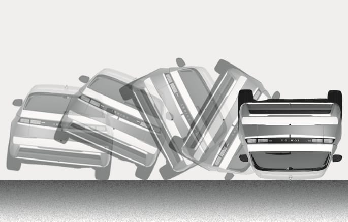
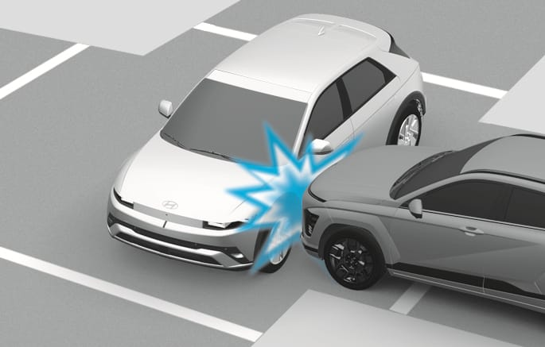
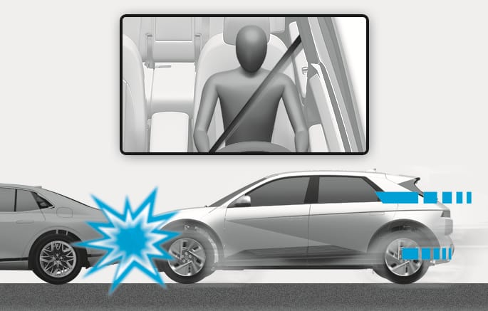
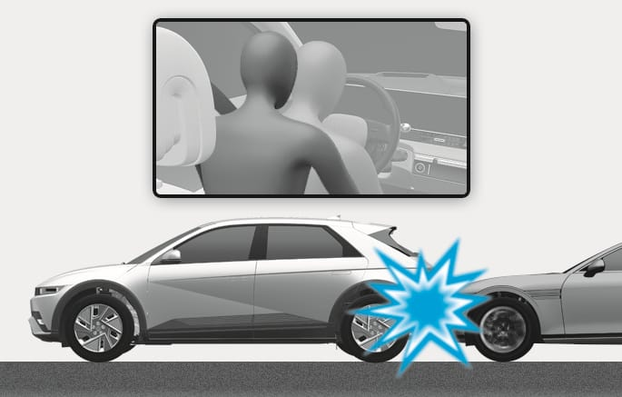
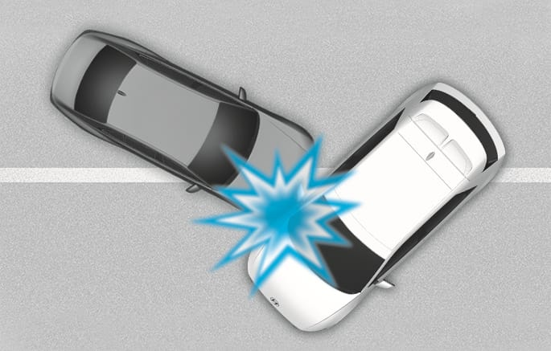
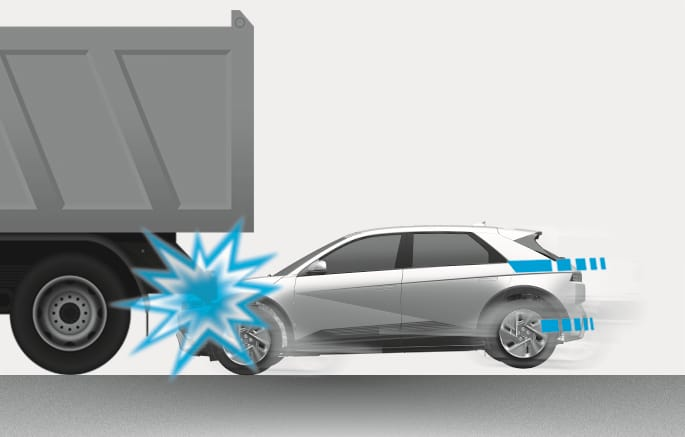
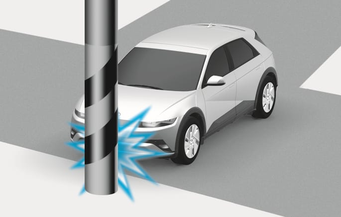

에어백이 작동하지 않는 경우
다음과 같은 경우에는 충돌이 발생하더라도 에어백이 작동하지 않습니다.
-
전복,구름 등의 사고

2C_AirbagNonOperatingConditionTurnoverCrash
-
측면 충돌로 차가 전복되면 측면 에어백(사이드 및 커튼 에어백)이 작동할 수 있습니다.
-
에어백 제어 모듈에 있는 전복 센서에서 전복이 감지되면 측면 에어백이 작동할 수 있 습니다.
-
정면 에어백(운전석 및 동승석 에어백)은 작동하지 않을 수 있습니다.
-
측면 충돌 사고

2C_AirbagNonOperatingConditionSideCrash
사이드 에어백이나 커튼 에어백이 장착되었다면 충돌 세기에 따라 사이드 에어백이나 커튼 에어백이 작동할 수 있습니다. 탑승자는 충돌한 방향으로 움직이므로 정면 에어백은 작동하지 않을 수 있습니다.
-
안전벨트만으로 탑승자를 보호할 수 있으며 에어백 작동 조건에 미달하는 경미한 충돌 사고가 발생하는 경우

2C_AirbagNonOperatingConditionMinorCrash
에어백이 작동해도 큰 도움이 되지 않으며, 오히려 에어백 작동으로 2차 피해(가벼운 찰과상, 안경 파손, 화상 등)가 날 수 있으므로 에어백이 작동하지 않을 수 있습니다.
-
후방 추돌이나 충돌 사고

2C_AirbagNonOperatingConditionRearCrash
충돌 반력에 의해 탑승자가 좌석 등받이 쪽으로 밀려서 정면 에어백의 보호를 받을 수 없으므로 작동하지 않을 수 있습니다.
-
사면 충돌이나 추돌 사고(앞 방향에서 비스듬히 충돌)

2C_AirbagNonOperatingConditionSidlingCrash
정면에서 전해지는 충격은 정면 충돌이나 추돌한 경우보다 약하여 에어백이 작동하지 않을 수 있습니다.
-
버스 또는 트럭과의 충돌 사고

2C_AirbagNonOperatingConditionTruckCrash
사고 순간 운전자는 반사적으로 급제동합니다. 급제동 시 차체의 앞쪽이 낮아지는 현상이 발생하는데 이 상태에서 충돌이나 추돌 시 범퍼는 상대편 차량의 밑으로 들어갈 수 있습니다. 이 때의 충격은 차량의 골격 부분(차체)에 거의 전해지지 않아 차체에 설치된 충돌 센서에서 약한 충격으로 감지될 수 있고, 따라서 에어백이 작동하지 않을 수 있습니다.
-
전봇대나 나무 등과의 충돌 사고

2C_AirbagNonOperatingConditionPollCrash
전봇대나 나무와 같은 기둥형 물체와 충돌할 때 에어백 센서에 기준 범위 이상의 충격이 전해지지 않으면 에어백이 작동하지 않을 수 있습니다.